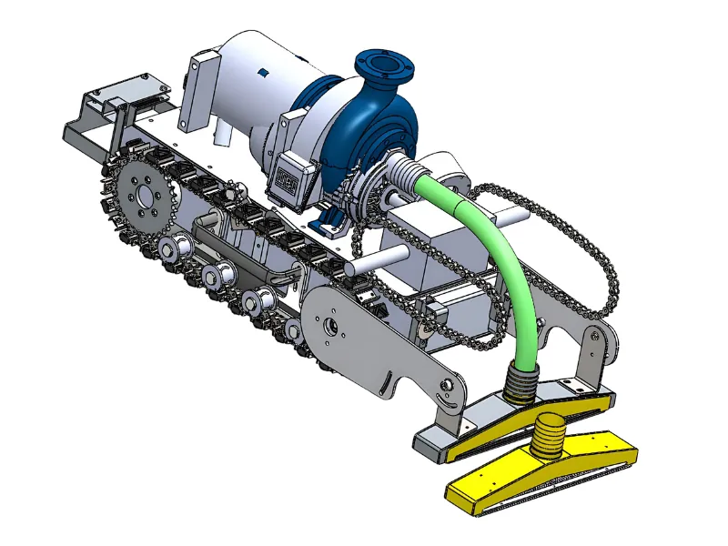

Robotics as a Service (RaaS)
The robotic technology can be used for your business without much investment. RAAS (Robotics as a Service) can help you by providing robots for difficult or repetitive tasks. It is cost-effective as you do not have to buy robots, but rather get them for a period. It is also beneficial for various types of businesses and industries.
Explore Our Products
Industrial Cleaning
SCE (Electric ROV) enables precise, low-footprint cleaning in compact tanks and sumps. SCH (Hydraulic ROV) delivers high-torque performance for deep pits, abrasive sludge and high-viscosity waste. RHINO, a heavy-duty tracked platform, excels in large-area cleaning, sludge extraction and transport over uneven industrial terrains.
- All systems are remotely operated, reducing manual exposure
- They ensure safety compliance and minimise downtime
- Ideal across sectors like steel, cement, chemical and power
- They enable scalable, efficient and continuous cleaning
- Suitable for mission-critical industrial operations
Solar Panel Cleaning
The KARA Solar Panel Cleaning System is a fully automated robotic solution designed to clean solar panels efficiently and safely without requiring structural modifications. Mounted on a diesel-based tractor, it features an electronically actuated robotic arm equipped with a rotating synthetic microfiber brush that ensures uniform cleaning and prevents hot spots. It also has an optional water sprinkler system.
- Closed-loop feedback mechanism for automatic brush height adjustment
- PLC-based control unit in an IP65 enclosure
- Operates at 6 km/h while driving and 1.2 km/h during cleaning
- Runs on a 10 KVA diesel generator and needs a total power of 5.75 kW
River Front Cleaning - Matsya
Matsya Float Sludge Cleaning System is a subscription-based robotic solution under the Robotics as a Service (RAAS) model, designed for automated sludge and debris removal from water bodies such as rivers, ponds, lakes and open tanks. Floating on the water surface, Matsya efficiently cleans without disturbing aquatic ecosystems.
- Water quality enhancement and reduction of manual intervention
- Environmentally friendly design
- Ideal for urban water management
- Cost-effective, low-risk alternative to manual sludge removal
- Ideal for hazardous or inaccessible areas
River Port Desilting
Our RHINO and MATSYA systems are purpose-built for desilting and sludge removal in river ports, canals and inland waterways. MATSYA, a heavy-duty floating robot, extracts sub-surface silt and floating debris using a hydro-cyclone-based sludge separation system, returning cleaner water while reducing ecological disruption. RHINO, a track-based crawler, handles shore-bound desilting and sludge transport across rugged, high-load terrains.
- Both platforms are remotely operated
- Safe and continuous operations in complex aquatic environments
- The system ensures navigational depth and improves port efficiency
- Supports sustainable dredging with minimal manual intervention
Confined Space Desilting
Under our Varaha series of sludge cleaning robots, this specialised robotic system performs efficient desilting operations in confined and hazardous spaces such as tanks, chambers and narrow industrial zones. With robots providing the best performance, we stand as a leading company for those looking for a robot service company in India.
- Contains multiple cutter attachments
- Breaking down hardened sludge
- Deep cleaning without manual intervention
- Improved safety and reduced downtime
- Alternative to human entry in dangerous environments
Canal, Reservoir and Open Tank Desilting
The Varaha Rhino is a strong, hydraulically powered sludge removal robot designed for extreme environments like canals, reservoirs and open tanks. It is built under the Robotics as a Service (RAAS) model and operates without the need for manual cleaning interventions. Thus, it is ideal for making it ideal for large-scale desilting. It also has a high-power onboard hydraulic power pack (available in 5HP and 10HP variants).
- Heavy-duty suction and cutter systems
- Efficient removal of hardened and settled sludge
- Ideal for rough terrains and continuous use
- Ideal for municipalities and industries

Municipal Stormwater, Sewer, Manhole and Settling Tank Cleaning
Our electric sludge cleaning robotic system is purpose-built for municipal stormwater drains, sewer lines, manholes and settling tanks. This system is fully electric, enabling clean and efficient operations in confined and hazardous environments. It has an ATEX-proof camera for safe monitoring in explosive-prone zones, along with a display screen and control panel for real-time remote operation.
- Integrated underwater submersible ROV (Remotely Operated Vehicle)
- Deep and thorough cleaning without human entry
- Designed for safety, precision and sustainability
- Minimal disruption and maximum efficiency